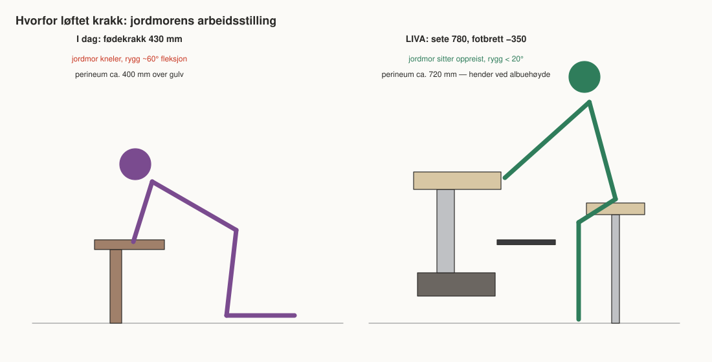
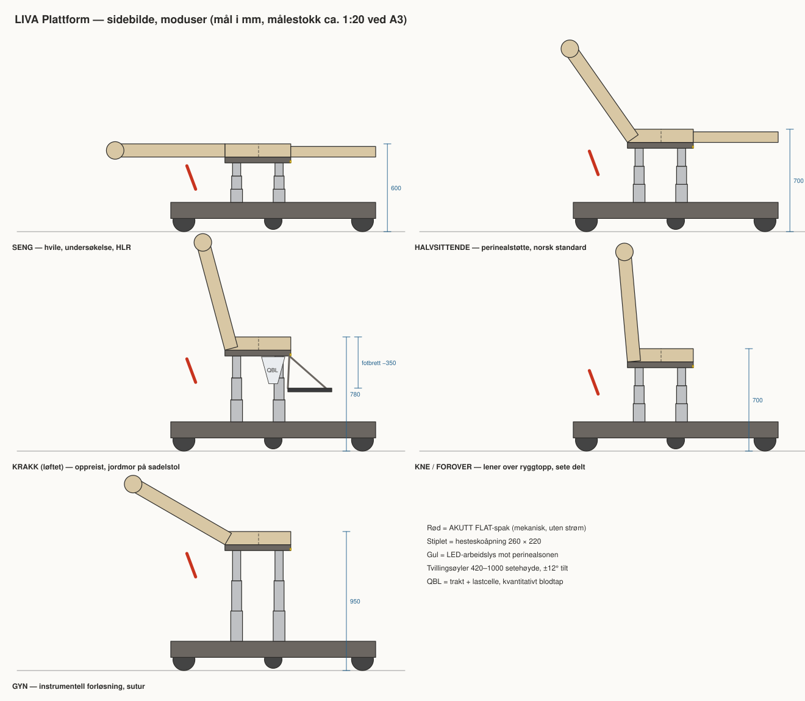
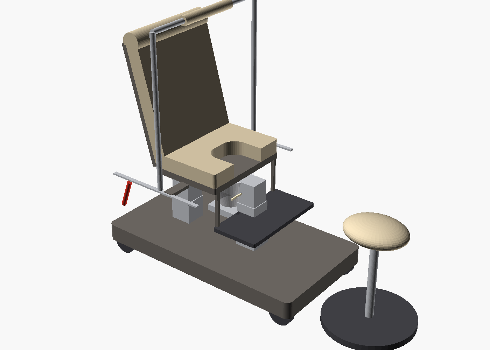
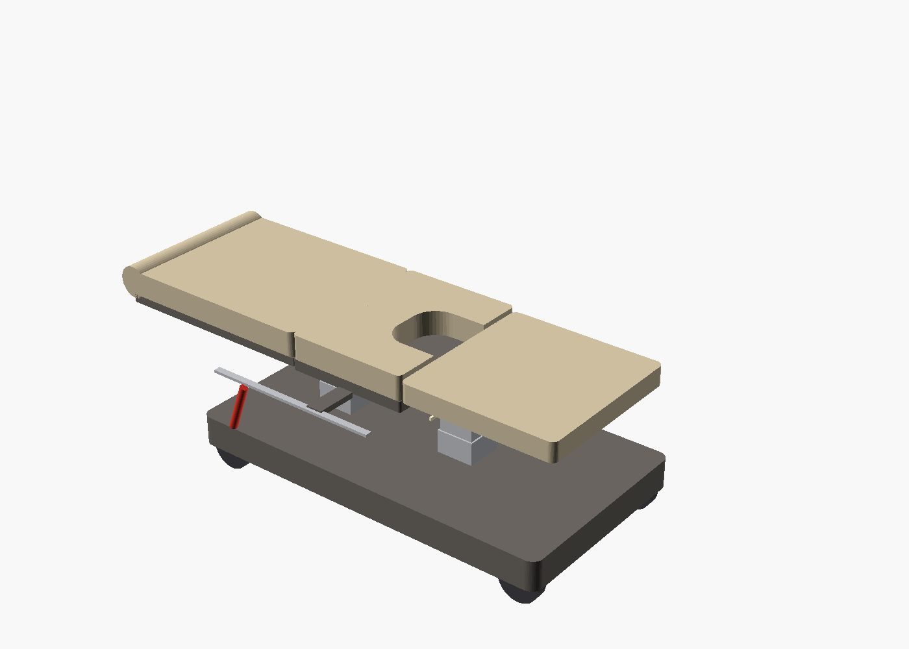

Krakkens fysiologi. Sengens trygghet. Én plattform.

Hesteskosete med eget fotbrett på en løfteplattform: kvinnens knevinkel er den samme som på krakken — men perineum er i jordmorens albuehøyde.



| Påstand | Status | Måles med |
|---|---|---|
| Mindre ryggbelastning for jordmor | Biomekanisk sannsynlig | IMU + RULA, n=20 crossover |
| Raskere til flatt / McRoberts | Teknisk testbar | Simuleringsdrill, 10 team |
| QBL fanger PPH tidligere | Indirekte støttet | Samsvar vs gravimetri, tid til tiltak |
| OASIS ikke økt | Sikkerhetsendepunkt | Ikke-underlegenhet, register |
| Bedre fødselsopplevelse | Hypotese | CEQ2 |
Klasse I / Im MDR · IEC 60601-1/-1-2 · krav fra -2-52 · ISO 14971 · ISO 13485
Konfidensielt — ikke del offentlig før patentvurdering